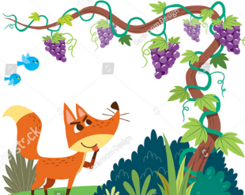
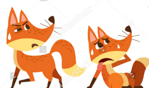

FOX AND THE GRAPE WINE

A Fox one day spied a beautiful bunch of ripe grapes hanging from a
vine trained along the branches of a tree. The grapes seemed ready to
burst with juice, and the Fox's mouth watered as he gazed longingly at
them.

The bunch hung from a high branch, and the Fox had to jump for it. The
first time he jumped he missed it by a long way. So he walked off a
short distance and took a running leap at it, only to fall short once
more. Again and again he tried, but in vain.
Now he sat down and looked at the grapes in disgust. "What a fool I
am," he said. "Here I am wearing myself out to get a bunch of sour
grapes that are not worth gaping for.And off he walked very, very
scornfully.
MORAL:- WE SHOULD ACCEPT OUR INCAPABILITIES AND TRY TO IMPROVE THAT.